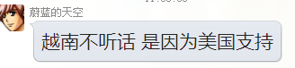
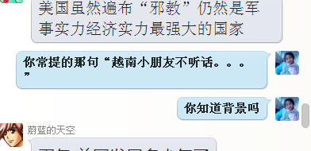

Conversation with 81184027 at Mon 19 May 2014 09:58:43 AM CST on 154115835 (webqq)
(09:58:57 AM) 阿萨汗蛋包飯: 川妹身材都比较小巧，容易驾驭
(09:54:30 AM) 醒悟: 怎么会听话
(09:54:44 AM) 福建-福州&水浒: 好男不娶福州女，好女不嫁莆田男
(09:54:52 AM) 阿萨汗蛋包飯: 乌托邦的老婆就是川妹
(09:55:03 AM) 醒悟: 你找过川妹:face13:
(09:55:10 AM) 福建-福州&水浒: 好男不娶福州女，好女不嫁莆田男
(09:55:14 AM) 阿萨汗蛋包飯: 他有经验。是的，福建流传着一句话：好男不娶福州女，好女不嫁莆田男
(09:55:30 AM) 福建-福州&水浒: 这句话东南快报刊登过的
(09:55:45 AM) 阿萨汗蛋包飯: 不错，众所周知
(09:55:50 AM) 醒悟: 莆田是那儿的
(09:56:25 AM) 醒悟: 日本女人上海男!:face13:
(09:56:32 AM) 阿萨汗蛋包飯: 福州女好吃懒做。莆田位于东南沿海的一个角落，位于泉州和福州之间，莆田男人过于小气斤斤计较
(09:57:08 AM) 醒悟: 福州是福建吗
(09:57:17 AM) 阿萨汗蛋包飯: 醒悟，找个日本女人吧！
(09:57:18 AM) 福建-福州&水浒: 川妹好啊
(09:57:42 AM) 阿萨汗蛋包飯: 川妹不错，听话，关键皮肤好
(09:57:53 AM) 福建-福州&水浒: 勤快，顾家，还烧的一手好菜
(09:57:58 AM) 醒悟: 小姐三大产地，四川东北湖南
(09:58:20 AM) 阿萨汗蛋包飯: 是啊，四川妹子顾家，菜烧的是川味
(09:58:30 AM) 福建-福州&水浒: 我内人是福建版本川妹
(09:58:46 AM) 福建-福州&水浒: 从小在我镇生活
(09:58:57 AM) 阿萨汗蛋包飯: 川妹身材都比较小巧，容易驾驭
(09:54:30 AM) 醒悟: 怎么会听话
(09:54:44 AM) 福建-福州&水浒: 好男不娶福州女，好女不嫁莆田男
(09:54:52 AM) 阿萨汗蛋包飯: 乌托邦的老婆就是川妹
(09:55:03 AM) 醒悟: 你找过川妹:face13:
(09:55:10 AM) 福建-福州&水浒: 好男不娶福州女，好女不嫁莆田男
(09:55:14 AM) 阿萨汗蛋包飯: 他有经验。是的，福建流传着一句话：好男不娶福州女，好女不嫁莆田男
(09:55:30 AM) 福建-福州&水浒: 这句话东南快报刊登过的
(09:55:45 AM) 阿萨汗蛋包飯: 不错，众所周知
(09:55:50 AM) 醒悟: 莆田是那儿的
(09:56:25 AM) 醒悟: 日本女人上海男!:face13:
(09:56:32 AM) 阿萨汗蛋包飯: 福州女好吃懒做。莆田位于东南沿海的一个角落，位于泉州和福州之间，莆田男人过于小气斤斤计较
(09:57:08 AM) 醒悟: 福州是福建吗
(09:57:17 AM) 阿萨汗蛋包飯: 醒悟，找个日本女人吧！
(09:57:18 AM) 福建-福州&水浒: 川妹好啊
(09:57:42 AM) 阿萨汗蛋包飯: 川妹不错，听话，关键皮肤好
(09:57:53 AM) 福建-福州&水浒: 勤快，顾家，还烧的一手好菜
(09:57:58 AM) 醒悟: 小姐三大产地，四川东北湖南
(09:58:20 AM) 阿萨汗蛋包飯: 是啊，四川妹子顾家，菜烧的是川味
(09:58:30 AM) 福建-福州&水浒: 我内人是福建版本川妹
(09:58:46 AM) 福建-福州&水浒: 从小在我镇生活
(09:59:27 AM) pastorqi: 5月19日，2014年的第140天。
天天主恩惠,福满溢灵程!
愿我们收获活水吗哪，对神发出感谢赞美
旧约 撒上 25：-26:
诗 119:17-32
箴 15:22-23
新约 约 12:1-36
(09:59:31 AM) 醒悟: 四川男人好吃懒做
(09:59:43 AM) 福建-福州&水浒: 除了省份证号码是5开头的，就是本土产的福建川妹纸
(10:00:14 AM) 福建-福州&水浒: :face13:
(10:00:17 AM) 醒悟: 男人越懒的地方女人越勤快
(10:00:20 AM) 阿萨汗蛋包飯: 呵呵，乌托邦喜欢川妹
(10:00:20 AM) 福建-福州&水浒: 也不见得
(10:01:08 AM) 醒悟: 安微女人如何:D
(10:01:18 AM) 福建-福州&水浒: 能生
(10:01:40 AM) 福建-福州&水浒: 安徽省普通家庭基本是二胎
(10:01:43 AM) 醒悟: 安微叫皖，意思可白玩
(10:01:52 AM) 福建-福州&水浒: 养不活也的生
(10:02:26 AM) 阿萨汗蛋包飯: 意思可白玩:强:
(10:02:26 AM) 醒悟: 当猪养:D
(10:02:51 AM) 福建-福州&水浒: --b
(10:02:53 AM) 阿萨汗蛋包飯: 呵呵呵，有道理，白玩
(10:04:54 AM) 醒悟: 安微人一般不喜欢读书，小学毕业的好多
(10:05:36 AM) 光: 我最敬佩的文人，思想家胡适就是安徽的
(10:07:05 AM) 福建-福州&水浒: 胡适好啊
(10:06:51 AM) 光: 嗯
(10:07:16 AM) 阿萨汗蛋包飯: 是的，曾经安徽省要饭的多。穷省.
(10:07:31 AM) 醒悟: 我说的是一般老百姓是那样!是安微人说的读完小学一般都不读了
(10:07:19 AM) 光: 嗯
(10:07:53 AM) 阿萨汗蛋包飯: 擦，不错，我认识个安徽的女人，想让我白玩
(10:07:39 AM) 光: 李鸿章也是安徽的
(10:07:58 AM) 光: 胡锦涛
(10:08:10 AM) 光: 汪洋好像也是安徽的
(10:08:34 AM) 醒悟: :B上了你就甩不掉啦
(10:09:00 AM) 福建-福州&水浒: 犯奸淫了
(10:09:24 AM) 福建-福州&水浒: 大罪过
(10:09:36 AM) 光: 汪洋（1955年3月12日－），中国安徽宿州人。
(10:09:56 AM) 醒悟: 等肚子一大，逼婚
(10:09:58 AM) 阿萨汗蛋包飯: 是啊，大罪过，还好她还在安徽，没敢只身来福建。
(10:09:42 AM) 光: 没记错
(10:10:20 AM) 福建-福州&水浒: :)
(10:10:17 AM) 光: :face14:
(10:10:39 AM) 阿萨汗蛋包飯: 胡主席祖籍是安徽的
(10:10:24 AM) 光: 嗯
(10:10:47 AM) 光: 所以各个地方都有优秀和不好的代表
(10:10:50 AM) 光: 不能一概而论
(10:10:55 AM) 光: 每个人只能代表他自己
(10:10:57 AM) 光: ：）
(10:11:21 AM) 醒悟: 我可不敢乱玩:D妹子好毒
(10:12:15 AM) 阿萨汗蛋包飯: 醒悟可以找个日本妹子。温柔。征服下大日本帝国。
(10:12:23 AM) 福建-福州&水浒: :憨笑:
(10:12:53 AM) 福建-福州&水浒: 光杆子自乐
(10:12:58 AM) 醒悟: 那叫汉奸，汉人奸日女
(10:13:14 AM) 阿萨汗蛋包飯: 上海人日语都不错。听说的，征服下大日本帝国
(10:13:49 AM) 醒悟: :D
(10:14:08 AM) 阿萨汗蛋包飯: 醒悟AV没少看，很懂的，很专业
(10:14:17 AM) 醒悟: 党国要我献身啊
(10:14:21 AM) 阿萨汗蛋包飯: :D
(10:17:23 AM) 醒悟: 信徒做爱很死板的，传教式
(10:18:15 AM) 阿萨汗蛋包飯: 哈哈哈，传教式最传统
(10:19:14 AM) 醒悟: :D爆菊爆口爆米花都不行
(10:21:09 AM) 阿萨汗蛋包飯: 需要对照倭国的AV进行调教:D
(10:21:30 AM) 醒悟: 小日本干起来惊天动地
(10:22:07 AM) 阿萨汗蛋包飯: 鬼子喜欢群P，团结一致到高潮
(10:23:41 AM) 光: 历史往而不返，基于现实的思考已经无法想象回到怀揣金锭银元的时代，但是工具会更新，道理却千古不移。
(10:23:50 AM) 光: http://user.qzone.qq.com/64405674/blog/1388816592
(10:24:49 AM) 光: 从前有个前苏联的笑话：在盛大的阅兵式上，各军种的方阵带着最尖端的常规武器和战略武器从勃列日涅夫的检阅台前走过，武器的杀伤力随着队伍的行进越来越强 大。最后在氢弹部队之后的方阵，是几个高矮不等胖瘦不均的文职人员队列。勃列日涅夫问安德罗波夫：丫是哪来的？安德罗波夫说：千万不要小看他们，他们的杀 伤力胜过所有的核武器的总和，他们来自国家计委……
(10:26:52 AM) 阿萨汗蛋包飯: 苏联也有国家计委？计划生育？
(10:27:10 AM) 光: 这个应该是经济学方面的冷笑话
(10:27:17 AM) 光: 计划经济委员会吧
(10:28:16 AM) 光: 我们国家也有类似于几五计划之流
(10:28:39 AM) 醒悟: 十年前浦江镇有几个蒙古包!后来知道是酒店里面俄国女人五佰一次:D
(10:30:02 AM) 阿萨汗蛋包飯: 俄国的你吃不消，
(10:30:24 AM) 阿萨汗蛋包飯: 倭国的适合你B-)
(10:30:58 AM) 光: 这个问题其实以前凤凰卫视窦文陶他们讨论过
(10:31:16 AM) 光: 日本的妓女其实不接待外国人的
(10:31:20 AM) 光: 特别是中国人
(10:31:53 AM) 阿萨汗蛋包飯: 嗯，是的。她们拒接中国人
(10:31:37 AM) 光: 嗯
(10:31:45 AM) 光: 如果有人接待了
(10:31:50 AM) 光: 其实并不是日本女人
(10:31:59 AM) 光: 而是中国或者其他地方过去的
(10:32:44 AM) 光: 只是改了一个日本名字
(10:33:06 AM) 光: 现实很冰冷
(10:33:09 AM) 光: 不要YY了
(10:33:28 AM) 醒悟: 听说有人找俄国人，放进去像入大海跟没进一样:D
(10:33:38 AM) 阿萨汗蛋包飯: 东京新宿歌舞伎一番町，如今变成了中国籍小姐们集体拉客之地
(10:33:26 AM) 光: 嗯
(10:34:11 AM) 阿萨汗蛋包飯: 到歌舞伎町可以找到中国小姐，这在日本已不是什么秘密。中国鸡说着日语拉客
(10:33:59 AM) 光: 中国也是人口贩子大国
(10:34:08 AM) 光: 这不是秘密
(10:34:19 AM) 光: 发达国家到处都有这样的例子
(10:34:44 AM) 光: 社会很现实
(10:35:13 AM) 醒悟: 五十六个民族能全上一遍就不差啦!别外国啦
(10:35:04 AM) 光: 有些人生下来就是为了满足别人的欲望存在的
(10:35:46 AM) 阿萨汗蛋包飯: 换句话说，有的女人就是喜欢做鸡
(10:35:38 AM) 光: 没有受过教育
(10:36:01 AM) 阿萨汗蛋包飯: 认为既快感又可以赚钱
(10:35:54 AM) 光: 又想过好日子
(10:36:25 AM) 光: 社会提供的机会又不多
(10:36:31 AM) 光: 看看东莞就好
(10:36:40 AM) 光: 女性是弱势群体
(10:37:10 AM) 福建-福州&水浒: :D
(10:37:11 AM) 光: 大量下岗女工
(10:37:18 AM) 光: 为了生计
(10:37:24 AM) 光: 为了家
(10:37:30 AM) 光: 确实挺可怜的
(10:37:37 AM) 光: 社会没有对他们提供什么方便
(10:38:09 AM) 光: 普通人家，如果有一个男孩和一个女孩
(10:38:19 AM) 光: 读书的一定是男孩而不是女孩
(10:38:32 AM) 光: 如果这家经济不好
(10:39:05 AM) 阿萨汗蛋包飯: 女人可以嫁人
(10:38:53 AM) 光: 嗯
(10:38:57 AM) 光: 有个片子
(10:39:02 AM) 光: 叫做背着爸爸去读书
(10:39:05 AM) 光: 去上学
(10:39:25 AM) 福建-福州&水浒: 昨天看一篇日本人都嘲笑中国人不读书
(10:39:16 AM) 光: 真事情改编的
(10:39:23 AM) 光: 就是说这个
(10:39:57 AM) 光: 背起爸爸上学 (1998)
(10:40:10 AM) 光: 本片根据真实故事改编。
农村孩子石娃（赵强）自幼丧母，与父亲（江化霖）和姐姐（颜丹晨）相依为命的他长到七岁时，为生活所困的父亲再也拿不出足够的钱供他和姐姐同时读书， 一把铜勺令成绩优异的姐姐辍学，父亲叮咛石娃好好读书。石娃上初中时，姐姐为给家中节省开支早早出嫁，并从男方出的彩礼钱中挤出一部分供他念书。懂事的石 娃刻苦读书，在全国化学奥林匹克竞赛中夺得一等奖第三名的好成绩，并考取了省城师范学校，但此时父亲却在干活时不幸摔伤终瘫痪在床，为了照顾好父亲又不耽 误学业，石娃决定背起父亲上学。
(10:40:25 AM) 光: 这也是为什么东方闪电的信徒大多数是女性的一个原因
(10:40:33 AM) 光: 女性受教育程度低啊
(10:41:09 AM) 阿萨汗蛋包飯: 嗯。女性受教育是低
(10:41:02 AM) 光: 观念造成的
(10:42:00 AM) 光: 所以要解决这个表面上的社会问题
(10:42:11 AM) 光: 有很多更深的问题需要思考需要解决
(10:42:21 AM) 光: 不是简简单单的打就完了
(10:43:45 AM) 阿萨汗蛋包飯: 昨天去教堂的路上我看到了反邪教的宣传图片，里面把李常受也列为邪
(10:43:33 AM) 光: 我一直思考中国人为什么不读书
(10:44:04 AM) 阿萨汗蛋包飯: 李常受的呼喊派也是邪教:fearful:
(10:43:47 AM) 光: 嗯
(10:44:55 AM) 阿萨汗蛋包飯: 并且全能神就是呼喊派的衍生物。邪教真多呀
(10:44:42 AM) 光: 嗯
(10:44:53 AM) 光: 等这个大树倒了
(10:45:00 AM) 光: 猢狲又散了
(10:45:16 AM) 光: 又找其他的大树去爬
(10:45:19 AM) 光: 思维模式还在啊
(10:45:28 AM) 光: 这就是为什么有的人从这个邪教出来
(10:45:34 AM) 光: 又加入了另外一个邪教
(10:45:43 AM) 光: 思维模式没变
(10:46:14 AM) 光: 改变一个人的观念谈何容易
(10:47:13 AM) 醒悟: 读书对有的人无用，小学毕业的亿万富豪我见的多了。我知道的富豪多数没文化有手段
(10:47:05 AM) 光: 嗯
(10:47:13 AM) 光: 杜月笙
(10:47:20 AM) 光: 他虽然不认字
(10:47:25 AM) 光: 但是他听书
(10:47:41 AM) 光: 头脑一点也不傻
(10:48:03 AM) 光: 你不能说他不读书啊
(10:48:35 AM) - -营长: 对，没有学历的人，不代表没有文化，也不代表没有学习力
(10:48:41 AM) 醒悟: 不识字不要经，不识时务没饭吃
(10:48:23 AM) 光: 嗯
(10:48:59 AM) 福建-福州&水浒: 懂的思考问题就可以
(10:48:45 AM) 光: 嗯
(10:49:14 AM) 福建-福州&水浒: 青帮一把手
(10:49:48 AM) 福建-福州&水浒: 话说黄金荣解放后扫大街？
(10:49:34 AM) 光: 嗯
(10:50:00 AM) 福建-福州&水浒: 杜月笙叫他去香港他拒绝
(10:50:14 AM) 福建-福州&水浒: 想不通这个问题，为何不去呢
(10:50:16 AM) 醒悟: 是的，学手艺。技校学三年，不如师傅带三月!实用是王道
(10:52:35 AM) 醒悟: 有些东西是性格定的，如骗人，他骗人不心跳，你脸红。做妓也一样手段有性格有关
(10:52:52 AM) 光: (10:35:04 AM) 光: 有些人生下来就是为了满足别人的欲望存在的
(10:53:25 AM) 光: 有人要吃要喝要玩，就要有人陪吃陪喝陪玩
(10:54:12 AM) 福建-福州&水浒: 有需求就有市场
(10:54:03 AM) 光: 嗯
(10:55:12 AM) 福建-福州&水浒: 像非洲多数是国货，非洲人深知中国货质量差，但也的买啊，
(10:55:01 AM) 光: 嗯
(10:55:24 AM) 福建-福州&水浒: 经济如此
(10:55:33 AM) 醒悟: 是的!做事方式主要看性格!不是所有男人能当流氓，所有女人能当妓
(10:55:37 AM) 光: 有些人生下来就是为了满足别人的欲望存在的
(10:55:45 AM) 光: 在不平等的社会
(10:55:57 AM) 光: 你让弱势如何自处
(10:56:03 AM) 光: 弱势者
(10:57:48 AM) 醒悟: :D所以不要讲公平!现在的妓还看不起一般人弱势吗?从前是现在不一定
(10:57:57 AM) 光: 嗯
(10:58:08 AM) 光: 人肉市场
(11:01:51 AM) 醒悟: 我去做指压时，那些女的就说过看不起那些上班的傻呼呼的!还有一个告诉我做这行的婚姻一般都不好，见识多了看不起自己的老公
(11:02:46 AM) 光: 嗯
(11:03:26 AM) 光: 耳渎目染
(11:04:21 AM) 蔚蓝的天空:
女子卖淫3次被抓 称出来后接着干有房贷要还 腾讯新闻
(11:04:13 AM) 光: 一个见识过纸醉金迷的生活的人，能够过清淡的日子，这样的人品行一定不俗
(11:04:42 AM) 醒悟: 所以服务业的女人，饭店，宾馆，做业务除非你很有钱最好别找
(11:04:55 AM) 蔚蓝的天空: @光 同意
(11:04:39 AM) 光: 嗯
(11:05:12 AM) 蔚蓝的天空: 通常都会重操旧业
(11:05:00 AM) 光: 嗯
(11:05:44 AM) 蔚蓝的天空: 能过寻常人的日子 不是凡人
(11:07:01 AM) 蔚蓝的天空: 能和自己的过去彻底了断 时间很难的事情
(11:06:52 AM) 光: 嗯
(11:07:12 AM) 阿萨汗蛋包飯: 两腿一开就能赚钱，赚过来轻松钱就不愿干别的行业了
(11:07:12 AM) 蔚蓝的天空: 是件
(11:08:03 AM) 福建-福州&水浒: ～～～
(11:08:48 AM) 醒悟: 是啊!十万一年无压力读书无用:D
(11:09:34 AM) 蔚蓝的天空: 所以现在娼妓遍地 还是毛泽东时代好吧 呵呵
(11:09:37 AM) 醒悟: 卖力,卖脑，卖身都是出卖自己的一部分
(11:10:05 AM) 蔚蓝的天空: 人要生存 做什么都有她的道理
(11:10:18 AM) 阿萨汗蛋包飯: 繁荣娼盛B-)
(11:10:22 AM) 醒悟: 现在有钱人的天堂
(11:10:46 AM) 蔚蓝的天空: 蛋包这个词还不错
(11:10:52 AM) 福建-福州&水浒: 金钱:moneybag:至上
(11:11:21 AM) 醒悟: 中国的上帝钱
(11:12:04 AM) 福建-福州&水浒: 钱:moneybag:好东西
(11:12:11 AM) 阿萨汗蛋包飯: 一个金钱至上的民族怎么会去静心读书呢，这样一个民族如何会有道德底线呢，有钱就是好。
(11:12:58 AM) 阿萨汗蛋包飯: 想尽方法搞钱，白猫黑猫抓到老鼠就是好猫，小平的名言
(11:13:14 AM) 醒悟: 学西方讲实用:D道德中国人发明的
(11:13:43 AM) 蔚蓝的天空: 邓家 是官倒著名的代表
(11:14:19 AM) 醒悟: 中国人知道道德经，外国人只知道月经:D
(11:14:46 AM) 蔚蓝的天空: :D
(11:14:59 AM) 蔚蓝的天空: 外国人是圣经
(11:15:56 AM) 醒悟: 对圣经:D
(11:16:36 AM) 蔚蓝的天空: 现在是极为特殊的历史转折期，物质文明发展到这一步注定了整体的精神（信仰）缺失，灵魂空虚，物欲横流，人们的精神堕入虚无主义，只能沉浸在金钱物质欲望和肉体感官刺激中，有各种不安和痛苦。多少年轻人也失去了纯真的理想和纯美的爱情。这绝不是我们这个星球上的生命的悲剧，而是任何一种生命在发展进程中注定的悲哀。
(11:20:26 AM) 醒悟: 爱情最高境界上床，现在上床不算高潮算爱的最高境界
(11:23:13 AM) 上善若水: 天空时刻这寻找合理性！、
(11:23:27 AM) 上善若水: 天空时刻在寻找合理性！
(11:24:09 AM) 上善若水: 但为什么没对宗教你的存在寻找一个合理性呢
(11:24:23 AM) 上善若水: 但为什么没对宗教的存在寻找一个合理性呢
(11:24:31 AM) 蔚蓝的天空: 若水兄 何以见得
(11:25:00 AM) 上善若水: 这里发生的一切你都认为是合理的
(11:25:07 AM) 蔚蓝的天空: 宗教 道家 佛教都可以
(11:25:16 AM) 上善若水: 是可以接受和忍受的
(11:25:17 AM) 福建-福州&水浒: ～～～
(11:25:21 AM) 蔚蓝的天空: @上善若水 你指什么
(11:25:37 AM) 上善若水: 意思外来的东西南北都不可以接受？
(11:25:50 AM) 上善若水:
上善若水 2014-5-19 11:25:37
意思外来的东南北都不可以接受？
(11:26:13 AM) 蔚蓝的天空: 可以 国外的宗教异端较多
(11:26:27 AM) 蔚蓝的天空: 极端 和分裂主义严重
(11:27:51 AM) 上善若水: 你这几天不是在为政府为种种乱象寻找合理性吗
(11:28:59 AM) 蔚蓝的天空: 而你的目光总是死死的盯在这些乱想上
(11:29:20 AM) 上善若水: 佛教可也是外来的教呀
(11:29:24 AM) 蔚蓝的天空: 长此以往 对你个人的心里
(11:29:29 AM) 蔚蓝的天空: 是啊
(11:29:54 AM) 上善若水: 你的目光又何尝不是盯着国外的种种不是吗？
(11:30:24 AM) 福建-福州&水浒: ～～→_→
(11:30:43 AM) 蔚蓝的天空: 在美国是没有邪教区别的
(11:30:57 AM) 蔚蓝的天空: 好像什么教都能存在
(11:31:15 AM) 蔚蓝的天空: 只要中国政府反对的 美国一定支持
(11:31:20 AM) 上善若水: 美国邪教很严重吗？
(11:31:35 AM) 蔚蓝的天空: 包括东突在内
(11:31:38 AM) 上善若水: 说来听听
(11:31:43 AM) 蔚蓝的天空: 美国也支持
(11:31:44 AM) 阿萨汗蛋包飯: 美国是邪教的集中营
(11:31:46 AM) 福建-福州&水浒: :pray:
(11:32:05 AM) 蔚蓝的天空: 中国的邪教主不都是喜欢去美国吗
(11:32:12 AM) 阿萨汗蛋包飯: 只要中国政府反对的 美国一定支持--正解:强:
(11:32:45 AM) 福建-福州&水浒: 没有造成政治上威胁
(11:32:52 AM) 蔚蓝的天空: 包括 达赖和热比娅 美国都支持
(11:32:57 AM) 上善若水: 中国政府代表绝对正确吗
(11:33:06 AM) 阿萨汗蛋包飯: 美国虽然遍布“邪教”仍然是军事实力经济实力最强大的国家
(11:33:19 AM) 上善若水: 你常提的那句“越南小朋友不听话。。。”
(11:33:31 AM) 上善若水: 你知道背景吗
(11:33:42 AM) 蔚蓝的天空: 蛋包 美国发展多少年了
(11:33:56 AM) 蔚蓝的天空: 越南不听话 是因为美国支持
(11:33:57 AM) 上善若水: 美国才三百年
(11:34:05 AM) 上善若水: 中华五千年
(11:34:12 AM) 上善若水: 你放屁
(11:34:15 AM) 阿萨汗蛋包飯: 是的历史很短，曾经的美国是印第安人的土地
(11:34:31 AM) 蔚蓝的天空: @上善若水 你有点常识吗
(11:34:36 AM) 上善若水: 了解一下那句话的背景去
(11:34:46 AM) 蔚蓝的天空: 中国经历了多少战乱
(11:34:53 AM) 蔚蓝的天空: 从1840开始、
(11:34:39 AM) lost message from #106681 to #106681
(11:34:58 AM) 蔚蓝的天空: 中国好过吗
(11:34:55 AM) 上善若水: 
(11:35:08 AM) 福建-福州&水浒: 抗美援越？
(11:35:09 AM) 上善若水: 当年这句话是邓访美
(11:35:12 AM) 蔚蓝的天空: 百年耻辱 你不知道
(11:35:15 AM) 上善若水: 中打越时
(11:35:23 AM) 阿萨汗蛋包飯: 中国古代史--一部自相残杀的历史。
中国近代史--一部屈辱的血泪史。
(11:35:23 AM) 上善若水: 美国支持的是中国
(11:35:32 AM) 上善若水: 不懂不要乱讲
(11:35:36 AM) 蔚蓝的天空: 你放次
(11:35:47 AM) 蔚蓝的天空: 毛泽东的最后一战
(11:35:55 AM) 蔚蓝的天空: 西沙海战
(11:36:04 AM) 上善若水: 中美对抗的苏越
(11:36:05 AM) 蔚蓝的天空: 不是打越南吗
(11:36:08 AM) 阿萨汗蛋包飯: 中国现代史--一部封印的历史书
(11:36:20 AM) 上善若水: 你那话是谁说的
(11:36:24 AM) 上善若水: 什么时说的
(11:36:26 AM) 阿萨汗蛋包飯: 中国古代史--一部自相残杀的历史。
中国近代史--一部屈辱的血泪史。
中国现代史--一部封印的历史书。
(11:36:26 AM) 福建-福州&水浒: 正解
(11:36:29 AM) 上善若水: 讲清楚
(11:36:56 AM) 上善若水: 扯蛋
(11:37:07 AM) 上善若水: 不要张冠李戴
(11:37:11 AM) 蔚蓝的天空: 西沙海战就是美国给越南提供装备
(11:37:37 AM) 上善若水: 我讲的是你说的那句话的背景
(11:38:45 AM) 上善若水: 越南小朋友不听话，该打打屁股了!
(11:38:52 AM) 上善若水: 这是邓说的
(11:39:08 AM) 阿萨汗蛋包飯: 本来还想娶个越南老婆的，泡汤了
(11:39:11 AM) 上善若水: 与西沙海战有半毛钱的关系吗
(11:39:27 AM) 阿萨汗蛋包飯: 越南反华，今四千名中国籍工人归国
(11:39:35 AM) 醒悟: 你小心死在床上:D
(11:39:40 AM) 上善若水: 天空
(11:39:57 AM) 福建-福州&水浒: @福州-仓山&阿萨 越南老婆跑路
(11:39:59 AM) 阿萨汗蛋包飯: 越南老婆计划泡汤
(11:40:13 AM) 醒悟: 中国人去干他们女人能不反吗?
(11:40:29 AM) 上善若水: 天空又跑了？
(11:40:33 AM) 阿萨汗蛋包飯: 呵呵，越南女人都被中国人买走了。所以越南反华
(11:40:45 AM) 福建-福州&水浒: :憨笑::憨笑::憨笑::憨笑:
(11:40:46 AM) 蔚蓝的天空: 建国后 发动的每一场对外战争都是正确的
(11:41:01 AM) 福建-福州&水浒: :p:p:p
(11:41:08 AM) 醒悟: 没女人干了，不干中国人干吗?
(11:41:13 AM) 蔚蓝的天空: @上善若水 你有点历史常识没有
(11:41:22 AM) 上善若水: 天空，你还要回去加强培训
(11:41:43 AM) 上善若水: 我一开始就说的你说的那句话
(11:42:05 AM) 上善若水: 问那句话的背景
(11:42:10 AM) 蔚蓝的天空: 就知道一天到晚抱怨政府
(11:42:16 AM) 上善若水: 说说那话是谁说的
(11:42:18 AM) 醒悟: 若水一定是外面地摊书看多了
(11:42:20 AM) 蔚蓝的天空: 那句话
(11:42:33 AM) 上善若水: 装瞎了
(11:42:33 AM) 福建-福州&水浒: 算啦，天空接受的是百度的新闻，俺们看的是维基百科的新闻，信息来源不同，见解也不同
(11:42:37 AM) 上善若水: ]-|
(11:42:58 AM) 蔚蓝的天空: 我看的也是维基
(11:43:07 AM) 上善若水: 
(11:43:18 AM) 上善若水: 这是我最开始发的问
(11:43:19 AM) 上善若水: 对不
(11:43:31 AM) 上善若水: 你跟我扯哪里
(11:43:49 AM) 上善若水: 这话与西沙海战没关系
(11:43:53 AM) 上善若水: 懂吗
(11:43:59 AM) 蔚蓝的天空: 那是对越自卫反击战
(11:44:06 AM) 蔚蓝的天空: 前的
(11:44:07 AM) 上善若水: 你以为是老毛说的
(11:44:16 AM) 上善若水: 总算你明白了
(11:44:25 AM) 蔚蓝的天空: 我靠 那是邓说的
(11:44:41 AM) 蔚蓝的天空: 我跟你说的西沙海战史两回事
(11:44:43 AM) 上善若水: 那你扯西沙海战干毛
(11:45:08 AM) 上善若水: 那现在你说说
(11:45:19 AM) 上善若水: 这话邓对谁说的
(11:45:25 AM) 蔚蓝的天空: 我说的西沙海战是美国支援越南的舰艇
(11:45:31 AM) 上善若水: 背景是什么
(11:45:35 AM) 蔚蓝的天空: 你的理解能力有问题
(11:46:10 AM) 蔚蓝的天空: 我是在回答 这次越南不听话是因为美帝支持
(11:46:25 AM) 上善若水: 是我先问你，去死
(11:46:50 AM) 蔚蓝的天空: 若水 你是男人吗
(11:47:06 AM) 蔚蓝的天空: 去死 一般女人爱用
(11:47:48 AM) 安徽-市区&钟馗: 应该对美帝实施瞬间毁灭性打击！
(11:48:10 AM) 蔚蓝的天空: 邓和你是老乡 你怎么不拥护@上善若水
(11:52:36 AM) 上善若水: 我不攀这个关系
(11:52:46 AM) 上善若水: 是真正为人为国
(11:52:56 AM) 上善若水: 我拥护谁
(11:53:06 AM) 上善若水: 不对，也不是拥护
(11:53:32 AM) 上善若水: 拥护这词，敢觉得奴性好重
(11:53:57 AM) 上善若水: 今天很忙，没空跟你扯了
(11:55:02 AM) 蔚蓝的天空: 就是你老乡吧政府变成现在的样子
(11:55:14 AM) 蔚蓝的天空: 归功他的改革开放
(11:55:19 AM) 上善若水: 与我没关系
(11:56:21 AM) 潮哥: :D
(11:58:21 AM) 蔚蓝的天空: 你今天的抱怨都是你老乡一手造成 都是你的老乡发动的:D@上善若水
(11:59:10 AM) 上善若水: 再次告诉你，小爷这不叫抱怨，爷只是说，你的主子没穿裤子
(11:59:17 AM) 蔚蓝的天空: @上善若水 都是你老乡黑猫论造成的
(11:59:35 AM) 上善若水: 而且屁股上有屎
(11:59:50 AM) 上善若水: 懂不
(11:59:56 AM) 蔚蓝的天空: @上善若水 :D你太易怒
(12:00:05 PM) 蔚蓝的天空: 易怒伤肝
(12:00:09 PM) lost message from #106774 to #106775
(12:00:28 PM) 山东-青岛&昆吾: 有一个村子只开一个饭店，所有人都必须去那家饭店吃饭。 村民：为什麼不引进更多的饭店呢？ 小二：我村处於发展阶段，多饭店容易乱不适合我们，所以我们要一饭店制。 村民：但是这菜太难吃了啊！ 小二：我们饭店才发展多少年啊，在怎麼不好也是我们自己的饭店啊。 村民：但是能不能便宜点啊！ 小二：这个不符合我们村情，饭店也要发展。 村民：但是饭店的管家都开上奔驰了。 小二：这是高薪养廉。 村民：但是去年你把饭店盈利的钱都藉给别的村了啊。 小二：这是个村策，你不需要关心。 村民：听说上个采购员拿买菜的钱跑别的村去了。 小二：那样的员工只是少数的。 村民：上次的包子里有沙子怎麼回事啊？ 小二：放心，已经把那个没证的厨师赶走了。 村民：那为什麼出这麼多问题，还要挂上优质称号呢？还对外称人人都吃的很满意。 小二：你是帮谁说话？饭店白养你了！ 村民：粮食是农民种的，饭店是工人盖的，厨师也是我们小民出身的。 小二： 你看现在M村正在欺负L村呢。 M村真霸道。 村民：我现在连饭都吃不好，这些事和我有什麼关系啊，那为什麼别村的饭店就没这麼多问题呢？ 小二：一说自己村就是什麼都不好，一说别的村就什麼都好。你个卖村贼！ ！ ！
很符合国情
(12:00:44 PM) 蔚蓝的天空: 你今天看不惯的政府 都是因为你老乡的引导造成的@上善若水
(12:02:03 PM) 蔚蓝的天空: 你老乡的改革开放 造成今天的结果 是开放了再也收不住了@上善若水
(12:02:37 PM) 福建-福州&水浒: 呵呵:stuck_out_tongue_winking_eye:
(12:02:54 PM) 蔚蓝的天空: 所以 还是请大家相信本届政府
(12:03:04 PM) lost message from #106781 to #106782
(12:03:03 PM) 蔚蓝的天空: :D
(12:02:55 PM) 潮哥: 跟老乡不老乡没关系吧
(12:03:01 PM) 潮哥: 相信个鬼
(12:03:16 PM) 潮哥: 胡温新政的时候，广大人民很期待，结果呢
(12:03:29 PM) 潮哥: 现在还相信，继续对外软弱，对内强硬吗
(12:03:50 PM) 福建-福州&水浒: 请相信本届政府
(12:04:33 PM) 潮哥: 太相信了
(12:04:38 PM) lost message from #106788 to #106789
(12:04:57 PM) 福建-福州&水浒: 有一个村子只开一个饭店，所有人都必须去那家饭店吃饭。 村民：为什麼不引进更多的饭店呢？ 小二：我村处於发展阶段，多饭店容易乱不适合我们，所以我们要一饭店制。 村民：但是这菜太难吃了啊！ 小二：我们饭店才发展多少年啊，在怎麼不好也是我们自己的饭店啊。 村民：但是能不能便宜点啊！ 小二：这个不符合我们村情，饭店也要发展。 村民：但是饭店的管家都开上奔驰了。 小二：这是高薪养廉。 村民：但是去年你把饭店盈利的钱都藉给别的村了啊。 小二：这是个村策，你不需要关心。 村民：听说上个采购员拿买菜的钱跑别的村去了。 小二：那样的员工只是少数的。 村民：上次的包子里有沙子怎麼回事啊？ 小二：放心，已经把那个没证的厨师赶走了。 村民：那为什麼出这麼多问题，还要挂上优质称号呢？还对外称人人都吃的很满意。 小二：你是帮谁说话？饭店白养你了！ 村民：粮食是农民种的，饭店是工人盖的，厨师也是我们小民出身的。 小二： 你看现在M村正在欺负L村呢。 M村真霸道。 村民：我现在连饭都吃不好，这些事和我有什麼关系啊，那为什麼别村的饭店就没这麼多问题呢？ 小二：一说自己村就是什麼都不好，一说别的村就什麼都好。你个卖村贼！ ！ ！
很符合国情
(12:10:55 PM) 潮哥:
(12:15:07 PM) 福建-福州&水浒: :T
(12:23:04 PM) 蔚蓝的天空: 请相信本届政府
(12:23:11 PM) lost message from #106794 to #106794
(12:23:13 PM) 心成长-辽宁: 本我：原始的我（婴儿的我）
自我：现实的我（当下的我）
超我：道德的我（道德的我）
我们大部分心理问题是由于，本我和超我种突引起的。
例子：
我看到地上有一百元钱，我想去拿起来去花了，去买需要的东西（这个是在满足本我的欲望），道德的我说不行的，这是人家的东西，我们要还给人家，不还要受法律的制裁的。（超我），自我说对的，人家的东西我们要还给人家，不能自己花了，把东西还给人家，人家还会感激你，你的心理很也好受些，没有哪么多复杂情绪状态。（自我）
自我具有协调本我，超我的作用。本我和超我的欲望太强，自我无法协调好，我们个体就会出现各种心理问题 。
(12:26:40 PM) 光: http://wenku.baidu.com/view/da102b175f0e7cd184253604.html
(12:27:45 PM) 蔚蓝的天空:
(12:30:15 PM) 光: 李其荣. (2008). 宗教对当代美国社会的影响. 学术界, (6), 54–68. Retrieved from http://www.cqvip.com/qk/96996x/200806/28711640.html
(12:34:00 PM) 蔚蓝的天空: 书籍是全世界的营养品。生活里没有书籍，就好像没有阳光；智慧中没有书籍，就好像鸟儿没有翅膀。
(12:34:04 PM) 光: 嗯
(12:34:34 PM) 安徽-市区&钟馗: 所言甚是。书是让人变得美好的催化剂。
(12:40:29 PM) 上善若水: 请相信天空就是一五毛，谢谢
(12:40:37 PM) 上善若水: 骗子
(12:40:59 PM) 上善若水: 天空你要记得，你每一个五毛里都要有群友们的一份
(12:41:06 PM) 上善若水: 要记得感恩
(12:41:39 PM) 蔚蓝的天空: 什么五毛
(12:41:52 PM) 蔚蓝的天空: 什么是五毛？、
(12:42:08 PM) 上善若水: 网评猿
(12:42:25 PM) 上善若水: 专门叫人相信政府的
(12:42:40 PM) 上善若水: 为政府叫好的
(12:42:44 PM) 山东-青岛&昆吾: 请相信本届政府！
(12:42:51 PM) 上善若水: :D
(12:42:54 PM) 蔚蓝的天空: 吾第一次听说网评员
(12:43:08 PM) 山东-青岛&昆吾: 这个可以有
(12:43:11 PM) 蔚蓝的天空: 我没有为政府叫好
(12:43:13 PM) 上善若水: 不怕被雷P么
(12:43:28 PM) 上善若水: 说叫好太文雅
(12:43:33 PM) 上善若水: 不适合你
(12:44:01 PM) 上善若水: 五毛死一户口本
(12:44:05 PM) 上善若水: :D
(12:44:19 PM) 蔚蓝的天空: @上善若水 你不知道政府都是你老乡给领歪了
(12:44:55 PM) 上善若水: 那老乡也可以去死，我不认识他
(12:45:03 PM) 上善若水: 别用他来脏我
(12:45:24 PM) lost message from #106824 to #106825
(12:45:32 PM) 上善若水: 天空，跟我一起说：五毛死一户口本
(12:45:36 PM) 上善若水: :D
(12:45:10 PM) 蔚蓝的天空: 腐败也是从你老乡家开始的
(12:45:25 PM) 蔚蓝的天空: 你不认识 他也是你老乡
(12:45:41 PM) 蔚蓝的天空: 他确实是四川的娃
(12:45:50 PM) 上善若水: 天空，跟我一起说：五毛死一户口本
(12:45:54 PM) 蔚蓝的天空: 五毛死一户口本
(12:45:55 PM) 上善若水: :D
(12:46:26 PM) 上善若水: 孩纸，你太下血本了
(12:46:31 PM) 上善若水: :L
(12:46:39 PM) 上善若水: 唉
(12:47:34 PM) lost message from #106835 to #106835
(12:47:27 PM) 上善若水: 关我屁事
(12:46:48 PM) 蔚蓝的天空: 好好的一个政党 让四川的娃给搞坏了
(12:47:40 PM) 蔚蓝的天空: 你相不相信都要在他的统治下干活
(12:47:49 PM) 蔚蓝的天空: 你不是四川的吗
(12:48:18 PM) 蔚蓝的天空: 还是相信本届政府吧
(12:48:30 PM) 上善若水: 给你五毛，走吧
(12:48:35 PM) 蔚蓝的天空: 本届政府一定会让大家满意的
(12:48:37 PM) 上善若水: 今天你血本下大了
(12:48:50 PM) 蔚蓝的天空: 五毛
(12:49:09 PM) 蔚蓝的天空: 网评员 这个职业还是第一次听说
(12:49:19 PM) 福建-福州&水浒: 请相信本届政府
(12:49:33 PM) 福建-福州&水浒: 请相信本届政府
(12:49:48 PM) 上善若水: 请叫他们网评猿，
(12:50:07 PM) 上善若水: 网评员没有
(12:50:15 PM) lost message from #106849 to #106849
(12:50:30 PM) 上善若水: 五毛死一户口本
(12:50:10 PM) 蔚蓝的天空: 开来若水之前是干这个的 因为少给若水五毛 所以若水来发牢骚
(12:50:34 PM) 上善若水: :D
(12:50:49 PM) 上善若水: 天空别来污我
(12:51:31 PM) 蔚蓝的天空: @上善若水 不就是烧给你五毛 下次补上 别再这牢骚
(12:51:40 PM) 上善若水: 天空一定牙痒痒了了
(12:52:00 PM) 蔚蓝的天空: :D
(12:52:06 PM) 上善若水: 我咒诅那些出卖灵魂的人
(12:52:19 PM) 蔚蓝的天空: 牙痒 请用蓝天六必治
(12:52:34 PM) 蔚蓝的天空: 出卖灵魂 就是你 若水
(12:52:40 PM) 上善若水: 天空，你确定第一次听说五毛？
(12:52:54 PM) 蔚蓝的天空: 你在这发表买国言论
(12:53:07 PM) 蔚蓝的天空: 我发誓 第一次
(12:53:19 PM) 上善若水: 发什么誓
(12:53:21 PM) 蔚蓝的天空: 之前还不知道有这个职业
(12:53:26 PM) 上善若水: 死一户口本
(12:53:34 PM) 上善若水: :D
(12:53:46 PM) 蔚蓝的天空: 发誓不灵 放屁不疼
(12:53:54 PM) 蔚蓝的天空: 是就是 不是就不是
(12:54:44 PM) 蔚蓝的天空: 你这么一说 我倒是想这个职业可以考虑 下班之后还可以赚点外快
(12:54:44 PM) 上善若水: 不论你是不是，你跟五毛言论都是一样的
(12:54:52 PM) 蔚蓝的天空: :D
(12:55:17 PM) 蔚蓝的天空: 那你的言论是什么
(12:57:36 PM) 上善若水: 我言论是你主子屁股有屎，
(12:57:55 PM) 上善若水: 叫他讲卫生，擦干净
(12:58:10 PM) 上善若水: 别让邻居笑话
(12:59:54 PM) 蔚蓝的天空: 我主子是谁呀
(01:00:09 PM) 蔚蓝的天空: 主公刘皇叔吗
(01:00:27 PM) 上善若水: 你主子本届政府呀
(01:02:25 PM) 蔚蓝的天空: 难道你主子是奥巴马
(01:03:14 PM) 醒悟: :D聊政治多累!聊川妹子吧:B
(01:03:16 PM) 上善若水: 自由主义者没什么主子
(01:03:32 PM) 上善若水: 这个很可怜
(01:03:52 PM) 醒悟: 六神无主:D
(01:05:12 PM) 蔚蓝的天空: @上善若水 你的主子可能是赵教主
(01:07:33 PM) 上善若水: 这个有可能哦
(01:07:55 PM) 蔚蓝的天空: 你是全能派来的卧底
(01:08:00 PM) 醒悟: 叫猪!:D
(01:08:11 PM) 醒悟: 赵叫猪
(01:08:16 PM) 上善若水: :dig:
(01:08:51 PM) 蔚蓝的天空: 若水是全能卧底 潜伏在我群内部
(01:09:21 PM) 上善若水: 你是人肚里的蛔虫哇
(01:09:29 PM) 上善若水: 你是我肚里的蛔虫哇
(01:13:20 PM) 毛莠莠: 有个人最近老是往我们邮箱里发东西
(01:13:36 PM) 毛莠莠: 不管你是出于什么样的目的
(01:13:54 PM) 蔚蓝的天空: 我的邮箱也是
(01:14:01 PM) 毛莠莠: 我奉劝你以后别往我这发
(01:14:28 PM) 毛莠莠: 再发我就咒你全家人都去信全能狗
(01:15:55 PM) 上善若水: :!